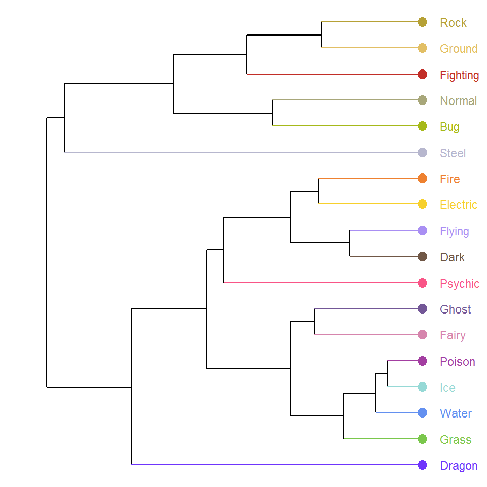
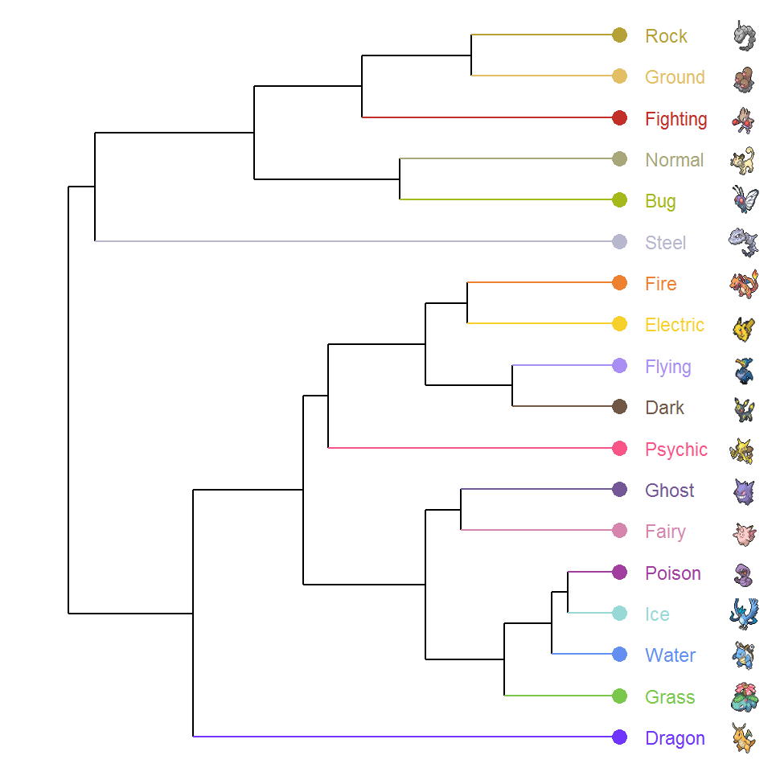

Create a Pokemon phylogenetic tree in ggplot with the extension package ggdendro.
Different from previous posts, this time we are going to have a fun one: Pokemon phylogeny in ggplot! Sounds exciting? Let’s go!
Pokemon is arguably one of the most popular computer games around the world. Not only does it inspire our imagination and creativity, but it also reflects our understanding and passion for nature. In fact, Pokemon was one of my favorite games back in my childhood days: I really enjoyed the sheer joy and excitement of collecting, training, and battling.
Pokemon represents a fantasy world teeming with a high diversity of amazing creatures distributed over diverse landscapes. There are currently 900ish Pokemon species as of 2021, belonging to 18 different types/functional groups. They roam in the oceans, thrive in the mountains, soar in the sky, dwell in the ground, and even live with humans in the urban areas!
Each Pokemon species is associated with a set of stats pertaining to their ability and performance, including HP (Hit Point), Attack, Defense, Special Attack, Special defense, and Speed. The values of these stats may vary among species of different types, and so it would be quite interesting to do some cluster analysis to explore the relationships among Pokemon types in terms of their stats.
In this post, we are going to construct the phylogeny of Pokemon types based on their stats and visualize the results using a dendrogram in ggplot. Hopefully, we will gain some novel insights into the Pokemon evolutionary history. Without further ado, let’s get started!
The first and most important thing is to get our Pokemon stats data at hand. We will scrape the data from the Pokemon Database and tidy them a bit.
library(tidyverse)
library(rvest)
# Read the webpage contents
Pokemon_html <- read_html("https://pokemondb.net/pokedex/all")
# Extract and tidy the stats table
Pokemon_df <- Pokemon_html %>%
html_element("#pokedex") %>%
html_table() %>%
select(-1, -4) %>%
mutate(Type = str_extract(Type, pattern = "[:upper:]{1}[:lower:]*"))
head(Pokemon_df)
# A tibble: 6 x 8
Name Type HP Attack Defense `Sp. Atk` `Sp. Def` Speed
<chr> <chr> <int> <int> <int> <int> <int> <int>
1 Bulbasaur Grass 45 49 49 65 65 45
2 Ivysaur Grass 60 62 63 80 80 60
3 Venusaur Grass 80 82 83 100 100 80
4 VenusaurMega V~ Grass 80 100 123 122 120 80
5 Charmander Fire 39 52 43 60 50 65
6 Charmeleon Fire 58 64 58 80 65 80Now we have the data ready, our next step is to perform hierarchical cluster analysis on the stats data to reveal the relationships among Pokemon types. Since the stats are measured in different units, we will first standardize them and compute the mean (of the standardized values) for each stat by Pokemon type. After that, we will create a dissimilarity matrix of the stats means based on Euclidean distance and use hclust() to do the hierarchical cluster analysis using the complete linkage method.
# Standardize the stats and compute the stats means by type
Pokemon_df_HC <- Pokemon_df %>%
mutate(across(HP:Speed, ~scale(.x))) %>%
group_by(Type) %>%
summarise(across(HP:Speed, ~mean(.x)))
# Hierarchical cluster analysis
Pokemon_clust <- Pokemon_df_HC[, -1] %>%
dist(., method = "euclidean") %>%
hclust(., method = "complete")
Pokemon_clust$labels <- Pokemon_df_HC$Type
So far so good. Time to get down to our main topic today: creating the dendrogram! There are two main extension packages for visualizing tree-like objects in ggplot: ggdendro and ggtree. ggdendro is an easy-to-use package with simple user-friendly functions, allowing for quick and basic visualization of cluster data. On the other hand, ggtree is a more comprehensive and versatile package geared towards sophisticated visualization and annotation of phylogenetic trees. It has a lot of nice features to offer, but requires more time and effort to really get the hang of the details.
To keep things simple, we will use ggdendro to visualize our cluster results. The function dendro_data() in the package extracts the line segments and labels from the cluster objects and returns the data as a list of data frames. These data frames can then be used for plotting as well as customizing the appearance of the dendrogram, for example, changing the colors of the terminal branches and setting the labels of the terminal nodes.
library(ggdendro)
# Extract the cluster data
Pokemon_dendro <- Pokemon_clust %>%
as.dendrogram() %>%
dendro_data(., type = "rectangle")
# Extract the terminal branches
Pokemon_dendro_tb <- segment(Pokemon_dendro) %>%
filter(yend == 0) %>%
left_join(label(Pokemon_dendro)[, c(1, 3)], by = "x")
# The color palette for the Pokemon types
type_cols_pal <- c("Normal" = "#A8A77A",
"Fire" = "#EE8130",
"Water" = "#6390F0",
"Electric" = "#F7D02C",
"Grass" = "#7AC74C",
"Ice" = "#96D9D6",
"Fighting" = "#C22E28",
"Poison" = "#A33EA1",
"Ground" = "#E2BF65",
"Flying" = "#A98FF3",
"Psychic" = "#F95587",
"Bug" = "#A6B91A",
"Rock" = "#B6A136",
"Ghost" = "#735797",
"Dragon" = "#6F35FC",
"Dark" = "#705746",
"Steel" = "#B7B7CE",
"Fairy" = "#D685AD")
# Create the dendrogram
Pokemon_dg <- ggplot() +
geom_segment(data = segment(Pokemon_dendro),
aes(x = x, y = y, xend = xend, yend = yend)) +
geom_segment(data = Pokemon_dendro_tb,
aes(x = x, y = y, xend = xend, yend = yend, color = label),
show.legend = F) +
geom_point(data = label(Pokemon_dendro),
aes(x = x, y = y, label = label, colour = label, hjust = 0),
size = 3, show.legend = F) +
geom_text(data = label(Pokemon_dendro),
aes(x = x, y = y-0.1, label = label, colour = label, hjust = 0),
size = 3, show.legend = F) +
coord_flip(clip = "off") + # Make the tree horizontal
scale_y_reverse(expand = c(0.12, 0)) + # Place the tree root on the left
scale_color_manual(values = type_cols_pal) +
theme_void()
Pokemon_dg

The above dendrogram looks pretty neat, but we can further spice it up a bit! Guess what ingredients we are going to add to the plot? Yes, The Pokemon images!
We will retrieve the Pokemon images representative of each type from the Pokemon Database and add them to the terminal nodes using the extension package ggtext. I have done a post on how to use ggtext before. Check it out here if interested!
library(ggtext)
# HTML <img> tags
Pokemon_images <- c(
"<img src = 'https://img.pokemondb.net/sprites/sword-shield/icon/dragonite.png' height = '15' width = '17'/>",
"<img src = 'https://img.pokemondb.net/sprites/sword-shield/icon/venusaur.png' height = '13' width = '15'/>",
"<img src = 'https://img.pokemondb.net/sprites/sword-shield/icon/blastoise.png' height = '15' width = '17'/>",
"<img src = 'https://img.pokemondb.net/sprites/sword-shield/icon/articuno.png' height = '15' width = '17'/>",
"<img src = 'https://img.pokemondb.net/sprites/sword-shield/icon/arbok.png' height = '17' width = '19'/>",
"<img src = 'https://img.pokemondb.net/sprites/sword-shield/icon/clefable.png' height = '15' width = '17'/>",
"<img src = 'https://img.pokemondb.net/sprites/sword-shield/icon/gengar.png' height = '15' width = '17'/>",
"<img src = 'https://img.pokemondb.net/sprites/sword-shield/icon/alakazam.png' height = '15' width = '17'/>",
"<img src = 'https://img.pokemondb.net/sprites/sword-shield/icon/umbreon.png' height = '18' width = '20'/>",
"<img src = 'https://img.pokemondb.net/sprites/sword-shield/icon/cramorant.png' height = '18' width = '20'/>",
"<img src = 'https://img.pokemondb.net/sprites/sword-shield/icon/pikachu.png' height = '25' width = '27'/>",
"<img src = 'https://img.pokemondb.net/sprites/sword-shield/icon/charizard.png' height = '15' width = '17'/>",
"<img src = 'https://img.pokemondb.net/sprites/sword-shield/icon/steelix.png' height = '15' width = '17'/>",
"<img src = 'https://img.pokemondb.net/sprites/sword-shield/icon/butterfree.png' height = '15' width = '17'/>",
"<img src = 'https://img.pokemondb.net/sprites/sword-shield/icon/persian.png' height = '15' width = '17'/>",
"<img src = 'https://img.pokemondb.net/sprites/sword-shield/icon/hitmonchan.png' height = '15' width = '17'/>",
"<img src = 'https://img.pokemondb.net/sprites/sword-shield/icon/dugtrio.png' height = '15' width = '17'/>",
"<img src = 'https://img.pokemondb.net/sprites/sword-shield/icon/onix.png' height = '15' width = '17'/>")
# Add the images to the dendrogram
Pokemon_dg +
scale_x_continuous(breaks = c(1:8, 9.1, 10, 11.2, 12:18), labels = Pokemon_images, position = "top") +
theme(axis.text.y.right = element_markdown(vjust = 0.6))

Quite a few interesting points from the dendrogram:
Overall, there seem to be two major groups of Pokemon types: Rock ~ Steel and Fire ~ Dragon.
Rock, Ground, and Fighting form a monophyletic group: These types are characterized by ground-dwelling species.
Fire and Electric are closely related to each other, so are Ice and Water: This makes much sense as fire and electric are both related to heat and energy, and ice and water are just the same substance of different phases.
Fairy and Ghost are paired together: Both of them consist of elusive and enigmatic species. In fact, they are pretty much two sides of the same coin—one represents “bright/positive” and the other represents “dark/negative”.
Surprisingly, Grass and Bug are quite distant from each other despite their (presumably) strong trophic connections: This is perhaps because one is a primary producer and the other is a consumer, thus having distinct stat properties.
To recap what we have done, we first got the Pokemon stats data from the website and tidied them. Next, we standardized the stats data and performed hierarchical cluster analysis on the mean stats of Pokemon types. Finally, we visualized the cluster results in ggplot using the package ggdendro and added some Pokemon images to the terminal nodes of the dendorgram using the package ggtext.
At this point, you might have seen that we used quite a few different methods and techniques throughout the process before arriving at our final product. In fact, this is the essence of data science workflow: starting with data collection and import, followed by data tidying and transformation, then data modeling and visualization, and finally data communication, which is just the post you are reading right now!
Hope you enjoy the reading and don’t forget to leave your comments and suggestions below if you have any!